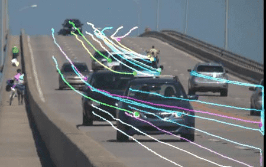
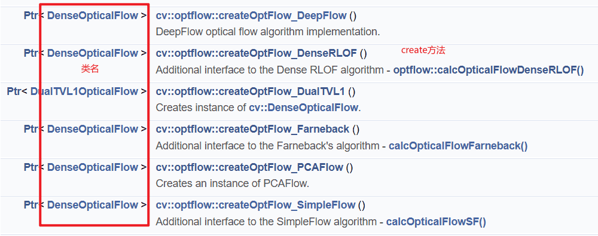
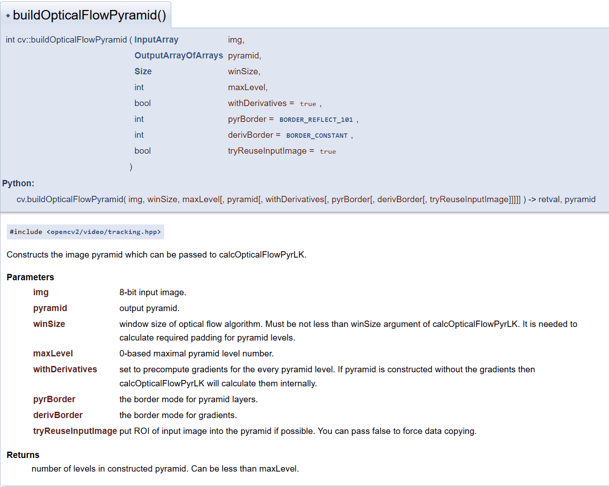

基础知识-光流：稀疏和稠密
来自本人笔记: https://github.com/masterAllen/LearnOpenCV/blob/main/docs/6.3.md
需要知道光流是什么，其实就是每个物体有自己运动的状态，一图说明，总之算出前后两帧的变换情况呗：

光流背后的原理不谈，本质上也是一个简单的数学模型，然后有不同的计算方法。
其中可以分为稠密和稀疏，二者优缺点从名字就能看出了。实验代码为 test_optical_sparse.py 和 test_optical_dense.py。
稀疏光流法，算出他认为运动的点的变化情况，结果即返回一堆点，这堆点有对应的运动矢量，从而可以得出运动状态；稠密光流，每一个点都有一个运动矢量，那也可以推出运动状态来。
代码说明
OpenCV 中涉及到光流的有两个部分：Main Module 里面的 Video Analysis；还有一个专门的 optflow 模块。
点击链接会吓一跳，怎么这么多类、这么多的方法！！！其实 OpenCV 里面组织的很直观：
-
首先是那么多的类，XXXOpticalFlow 就是各种各样的光流算法类。这些类都有两个基本方法：
create(),calc(img1, img2, ...)。即创建一个对象，和根据前后两张图片计算光流。create创建对象，不传参数就用默认参数。有的类可能还有专门的 XXXOpticalFlowParms 这种专门的参数类；有些类就是直接的a=xx, b=yy这种普通参数。但本质上都一样，前者多了创建一个参数对象这个步骤。
-
calc计算光流，前后两张图片是肯定要有的，其他的参数就不同方法不一样了。 -
然后方法其实分成就两种，其实都是有语法糖：
createOpticalFlowXXX()就是创建上面的类的一个对象。
-
calcOpticalFlowXXX(img1, img2, ...)就是直接计算光流，没必要记这些方法，创建对象后调用 calc 更好。
推荐：用 createXXX 创建对象，然后调用 calc 方法。用 calc 是统一方便，每个方法只要创建好对象都是调用 calc，不用太困扰。用 createXXX 因为有些方法共用一个类，区别只是对象调用的 create() 的参数不同。可以看下面的截图理解：前两个都返回 DenseOpticalFlow，但 createXXX 相当于做了一层包装，调用 createA 相当于调用 create() 时传入 A 方法中应该的默认参数，很方便。当然有的类没有直接调用的 createXXX 方法...

有的类的名字和方法名字并不完全对应，也有的类没有对应直接可以调用的 craeteOpticalFlow 和 calcOpticalFlow 方法，不过没关系，直接看文档或者代码，就知道怎么用了。
此外 optflow module 中有一些 GPCXXX 的类，这个都是用于叫 Global Patch Collider 的方法，发表于 CVPR 2016 的文章，本质是计算稠密光流。用的决策树方法，没找到对应的模型文件，网上资料也很少。可能不太推荐用，要用的话去 opencv contrib 仓库中的 optflow module，里面有 samples 代码。
稠密光流
稠密光流有下面几种：
cv2.DISOpticalFlow
cv2.FarnebackOpticalFlow
cv2.optflow.createOptFlow_DualTVL1()
cv2.optflow.createOptFlow_SimpleFlow()
cv2.optflow.createOptFlow_DeepFlow()
cv2.optflow.createOptFlow_DenseRLOF()
cv2.optflow.createOptFlow_PCAFlow()
cv2.optflow.createOptFlow_SparseToDense()
如前所述，创建一个对象之后，就可以直接用 calc(img1, img2) 计算了。除了 DenseRLOF 必须要是彩色图片，其他都可以是灰度图。最后结果就是和输入图片一样大小的数组，每个像素里面有两个值，代表了大小和方向。
因为实在太多了，每种都有不同的参数，我这里就直接只写 main module 里面的 Farneback 示例了。其实稠密光流计算非常直观，不输入参数用默认的，也能出结果。具体用的时候，请查看各个方法的原理，然后自行查阅资料调参。
void cv::calcOpticalFlowFarneback (
InputArray prev, InputArray next,
InputOutputArray flow,
double pyr_scale,
int levels, int winsize,
int iterations,
int poly_n,
double poly_sigma,
int flags
)
随便写一下，很多就直接复制粘贴了，不过分纠结原理：
- prev, next: 前后两张图
- flow: 输出的光流，大小 (w, h, 2)，类型 32FC2，代表每个点分别两个方向移动了多少单位：
prev(y, x) = next(y+flow(y,x)[1], x+flow(y,x)[0]) - pyr_scale: specifying the image scale (<1) to build pyramids for each image; pyr_scale=0.5 means a classical pyramid, where each next layer is twice smaller than the previous one.
- levels, winsize: 和上面函数一样
- iterations: number of iterations the algorithm does at each pyramid level.
- poly_n: size of the pixel neighborhood used to find polynomial expansion in each pixel; larger values mean that the image will be approximated with smoother surfaces, yielding more robust algorithm and more blurred motion field, typically poly_n =5 or 7.
- poly_sigma: standard deviation of the Gaussian that is used to smooth derivatives used as a basis for the polynomial expansion; for poly_n=5, you can set poly_sigma=1.1, for poly_n=7, a good value would be poly_sigma=1.5.
稀疏光流
稀疏光流就两个：main module 里面的 SparsePyrLkOpticalFlow 和 optflow module 里面的 SparseRLOF
首先 SparseRLOF 实测 python 中有大问题，必须要重复调用两次才貌似正常，暂时不推荐用。链接：https://github.com/opencv/opencv_contrib/issues/2663
而 PyrLKOpticalFlow 就是经典的 KLT 方法，即 Shi-Tomas角点方法找特征点 + LK 求解光流变化。这两个稀疏光流方法在调用 calc 的时候，都要给两个参数：prevPts 和 nextPts。前者是第一张图片的角点，后者是第二张图片的角点，后面的那个是函数里面会自己算然后赋给传入参数，Python 里传入 None 就好。
两个方法在 Python 的返回值是 (nextPts, status, err)。第二张图片的对应角点（即按照传入的 prevPts 的顺序）、这个对应角点是否是真的找到了（1表示可以大胆用，0表示不行）、前后两个角点的计算误差（存疑？）。
下面就是角点的 KLT 方法：
calcOpticalFlowPyrLK
void cv::calcOpticalFlowPyrLK (
InputArray prevImg, InputArray nextImg,
InputArray prevPts,
InputOutputArray nextPts,
OutputArray status, OutputArray err,
Size winSize = Size(21, 21),
int maxLevel = 3,
TermCriteria criteria = TermCriteria(TermCriteria::COUNT+TermCriteria::EPS, 30, 0.01),
int flags = 0,
double minEigThreshold = 1e-4
)
cv.calcOpticalFlowPyrLK(prevImg, nextImg, prevPts, nextPts) -> nextPts, status, err
OpenCV 的文档写的已经非常好，这里简单随便写一下，也可以参考代码 test_optical_sparse.py：
- prevImg, nextImg: 前后两张图。除了 8-bit，还可以输入金字塔（通过
buildOpticalFlowPyramid函数构造 - prevPts: 前面一张图的角点，可以用不同方法，最后是一个 (n, 1, 2) 大小的 ndarray
- nextPts: Python 中直接用 None；后面一张图对应的角点，这个函数会自动计算；也可以传入粗略估计的位置，函数会更新，需要 flag 设为 OPTFLOW_USE_INITIAL_FLOW
- status: (n, 1) 大小的 ndarray，表示对应角点是否找到，1 找到，0 未找到
- err: 没了解
- winSize: 每个金字塔层级的搜索窗口大小
- maxLevel: 金字塔层级，0 表示不用金字塔；否则为 n+1 级
- criterial, minEigThreshold: 具体看代码或者文档，需要知道算法具体的原理
该函数相当于除了前后两张图，还需要输入第一张图的角点位置，输出是第二张图角点位置。文章最上面的那张图片的那些彩色线条就是相当于画直线得来。
# params for ShiTomasi corner detection
parms0 = {
'maxCorners': 100,
'qualityLevel': 0.3,
'minDistance': 7,
'blockSize': 7,
}
old_gray = cv2.cvtColor(old_frame, cv2.COLOR_BGR2GRAY)
old_points0 = cv2.goodFeaturesToTrack(old_gray, mask=None, **feature_params)
new_points0, st0, err0 = cv2.calcOpticalFlowPyrLK(old_gray, now_gray, old_points0, None, **params0)
# new_points1, st1, err1 = cv2.optflow.calcOpticalFlowSparseRLOF(old_frame, now_frame, old_points1, **parms1)
# Select good points
old_points0 = old_points0[st0==1]
new_points0 = new_points0[st0==1]
buildOpticalFlowPyramid
为了第一个函数服务的，结果可以作为第一个函数的 prevImg 和 nextImg。我干脆直接截图了，用的时候再细调：

其他
readOpticalFlow, writeOpticalFlow
读写光流 .flo 文件，如函数名所属，没有好讲的。